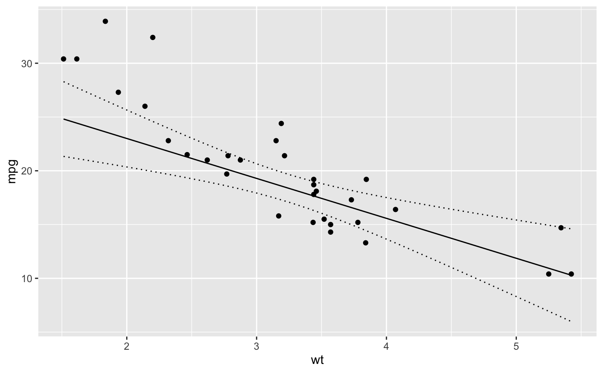
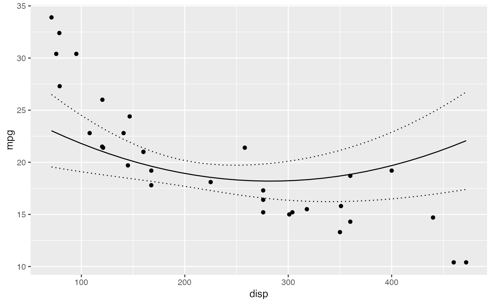

Generates a new data frame that can be passed to a predict function.
The main idea is that most variables are held constant at a reference level
while the variables of interest vary across their range.
new_data can be thought of as a sophisticated version of expand.grid.
The data frame to generate the new data from.
A character vector of the variables to represent as a sequence in the new data.
A named list of reference values for variables that are not in seq.
A list of character vectors indicating the sets of variables to only allow observed combinations for. If TRUE then obs_only is set to be seq.
A count indicating the length of numeric and possibly integer sequences.
A tibble of the new data.
The returned variables are of the same class as the original variables while
the rows in the data frame are unique. Consequently continuous variables such as integers
which have discrete values will not attain the specified length_out value if
there are too few possible values between the minimum and maximum.
If a factor is named in seq then all levels of the factor are represented i.e.
length_out is ignored. The only exception to this is if the factor is named in obs_only
in which case only observed factor levels are permitted in sequences.
It is worth noting that ref can be used to specify sequences for particular values as well
as single references. It is useful for extrapolating outside the range of the data or changes the levels of a factor.
If an element of ref is a character vector and the corresponding column is a data frame, then the ref element is assigned the same
factor levels as the column in the data. This is useful for choosing a factor level without having to set the correct levels.
library(ggplot2)
library(newdata)
mtcars <- datasets::mtcars
model <- lm(mpg ~ wt + hp + poly(disp,2), data = mtcars)
summary(model)
#>
#> Call:
#> lm(formula = mpg ~ wt + hp + poly(disp, 2), data = mtcars)
#>
#> Residuals:
#> Min 1Q Median 3Q Max
#> -3.3887 -1.6079 -0.3997 1.7992 4.2331
#>
#> Coefficients:
#> Estimate Std. Error t value Pr(>|t|)
#> (Intercept) 35.13941 3.53184 9.949 1.58e-10 ***
#> wt -3.71314 0.91483 -4.059 0.000379 ***
#> hp -0.02115 0.01026 -2.062 0.048978 *
#> poly(disp, 2)1 -4.09195 6.21246 -0.659 0.515687
#> poly(disp, 2)2 7.87570 2.36778 3.326 0.002546 **
#> ---
#> Signif. codes: 0 ‘***’ 0.001 ‘**’ 0.01 ‘*’ 0.05 ‘.’ 0.1 ‘ ’ 1
#>
#> Residual standard error: 2.263 on 27 degrees of freedom
#> Multiple R-squared: 0.8772, Adjusted R-squared: 0.859
#> F-statistic: 48.2 on 4 and 27 DF, p-value: 6.521e-12
#>
# generate a data frame across range of wt with other predictor
# variables held constant
wt <- new_data(mtcars, c("wt"))
head(wt)
#> # A tibble: 6 × 11
#> mpg cyl disp hp drat wt qsec vs am gear carb
#> <dbl> <dbl> <dbl> <dbl> <dbl> <dbl> <dbl> <dbl> <dbl> <dbl> <dbl>
#> 1 20.1 6.19 231. 147. 3.60 1.51 17.8 0.438 0.406 3.69 2.81
#> 2 20.1 6.19 231. 147. 3.60 1.65 17.8 0.438 0.406 3.69 2.81
#> 3 20.1 6.19 231. 147. 3.60 1.78 17.8 0.438 0.406 3.69 2.81
#> 4 20.1 6.19 231. 147. 3.60 1.92 17.8 0.438 0.406 3.69 2.81
#> 5 20.1 6.19 231. 147. 3.60 2.05 17.8 0.438 0.406 3.69 2.81
#> 6 20.1 6.19 231. 147. 3.60 2.19 17.8 0.438 0.406 3.69 2.81
wt <- cbind(wt, predict(model, newdata = wt, interval = "confidence"))
ggplot(data = wt, aes(x = wt, y = fit)) +
geom_point(data = mtcars, aes(y = mpg)) +
geom_line() +
geom_line(aes(y = lwr), linetype = "dotted") +
geom_line(aes(y = upr), linetype = "dotted") +
ylab("mpg")

# generate a data frame across range of wt with other predictor
# variables held constant
disp <- new_data(mtcars, c("disp"))
head(disp)
#> # A tibble: 6 × 11
#> mpg cyl disp hp drat wt qsec vs am gear carb
#> <dbl> <dbl> <dbl> <dbl> <dbl> <dbl> <dbl> <dbl> <dbl> <dbl> <dbl>
#> 1 20.1 6.19 71.1 147. 3.60 3.22 17.8 0.438 0.406 3.69 2.81
#> 2 20.1 6.19 84.9 147. 3.60 3.22 17.8 0.438 0.406 3.69 2.81
#> 3 20.1 6.19 98.7 147. 3.60 3.22 17.8 0.438 0.406 3.69 2.81
#> 4 20.1 6.19 113. 147. 3.60 3.22 17.8 0.438 0.406 3.69 2.81
#> 5 20.1 6.19 126. 147. 3.60 3.22 17.8 0.438 0.406 3.69 2.81
#> 6 20.1 6.19 140. 147. 3.60 3.22 17.8 0.438 0.406 3.69 2.81
disp <- cbind(disp, predict(model, newdata = disp, interval = "confidence"))
ggplot(data = disp, aes(x = disp, y = fit)) +
geom_point(data = mtcars, aes(y = mpg)) +
geom_line() +
geom_line(aes(y = lwr), linetype = "dotted") +
geom_line(aes(y = upr), linetype = "dotted") +
ylab("mpg")
